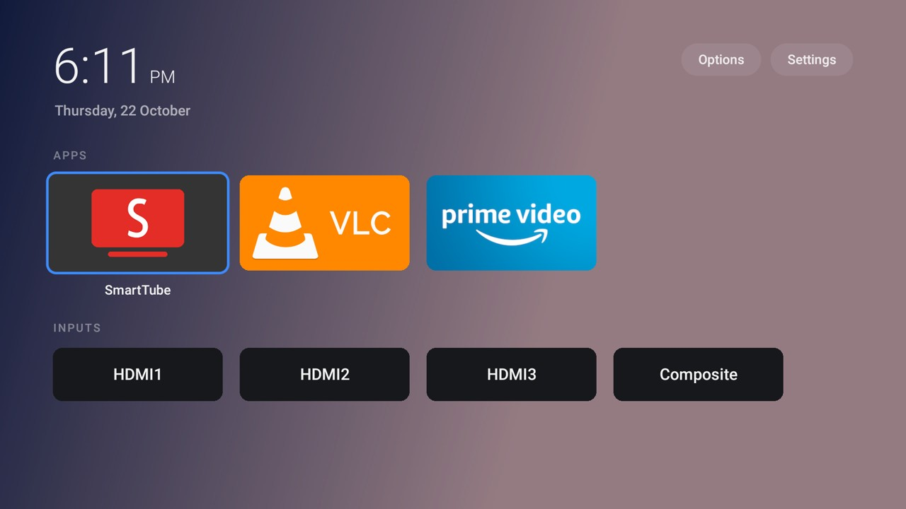

把容易误触的编辑动作收起来
dumbTV home用遥控器管理应用和HDMI输入，常规模式下长按确定或按菜单会出现移动、改名、隐藏和应用信息。10月25日的启动器1.5增加童锁，开启后把选项与设置按钮隐藏，并关闭磁贴上的这些编辑手势；应用和输入仍照常打开。需要改动时，在主页长按菜单三秒，选项页重新出现，成年人可以关闭童锁。它适合减少儿童误改排列或隐藏常用应用，不要求每次观看都输入密码。配置文件也能关闭此状态，不过正常使用的退出入口就是遥控器长按，不必重新连接电脑。
dumbTV home · 消费DIY · 遥控交互与真机反馈

dumbTV home用遥控器管理应用和HDMI输入，常规模式下长按确定或按菜单会出现移动、改名、隐藏和应用信息。10月25日的启动器1.5增加童锁，开启后把选项与设置按钮隐藏，并关闭磁贴上的这些编辑手势；应用和输入仍照常打开。需要改动时，在主页长按菜单三秒，选项页重新出现，成年人可以关闭童锁。它适合减少儿童误改排列或隐藏常用应用，不要求每次观看都输入密码。配置文件也能关闭此状态，不过正常使用的退出入口就是遥控器长按，不必重新连接电脑。
发布说明明确区分这层锁与系统家长控制。长按Home仍会出现Fire OS自己的快捷菜单，遥控器上的流媒体应用键和独立设置键也可能继续工作；启动器不能封住这些系统入口。项目建议需要密码限制的人使用Amazon自己的家长控制，不把一个隐藏按钮的界面说成完整的访问控制。桌面可选择横向行或网格、磁贴尺寸及标签显示方式，家长先整理好常用入口再打开童锁即可。应用本身没有INTERNET权限，不能联网；这项约束只描述启动器，不包括需要通过家庭网络安装、更新或恢复的电脑端工具。
1.4修复的是另一种日常中断：电视待机前显示Amazon主页，唤醒后Fire OS恢复原活动，却没有产生新的窗口状态事件，负责切回dumbTV的服务便错过它。新逻辑记住最后的前台软件包，在屏幕点亮时检查是否该回主页；正在Netflix等其他应用里，或用户主动暂留Amazon主页时，不强行带走。提交者在二代Fire TV Cube、Fire OS 7.7.1.3上观察到旧行为约停留十三秒，新逻辑在遥控器和Alexa例程唤醒时即时回到dumbTV。不过他测试的是带个人界面修改、采用相同逻辑的构建，明确未安装该分支的原样包。
同一版本在选项里加入默认关闭的内存条，显示可用内存与占用比例；Android报告内存紧张，或空闲比例低于百分之十五时转为琥珀色。它只呈现读数，不会自动关闭应用，也不宣称因此让电视变快。安装脚本同时修正待机时挂住、网络断开被误判为应用未安装的问题，并把较新Android的Home相关设置写到正确位置，恢复流程则保留原来的设置值。项目允许Claude Code、Codex等代理协助执行定制流程；发布的变化仍是普通Android界面和脚本行为，没有电视端模型推理。实际收益取决于设备固件及用户需要保留的系统功能。